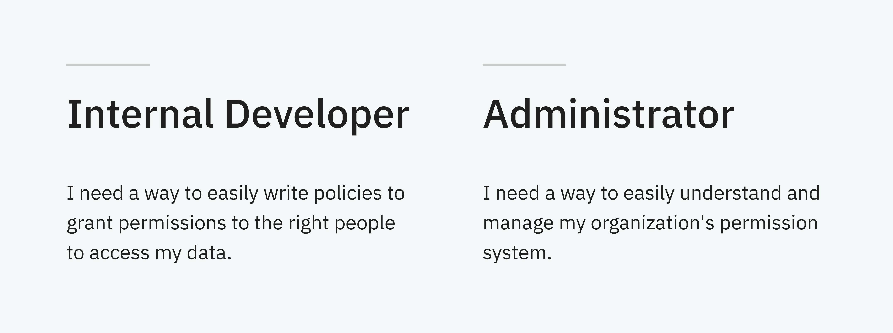
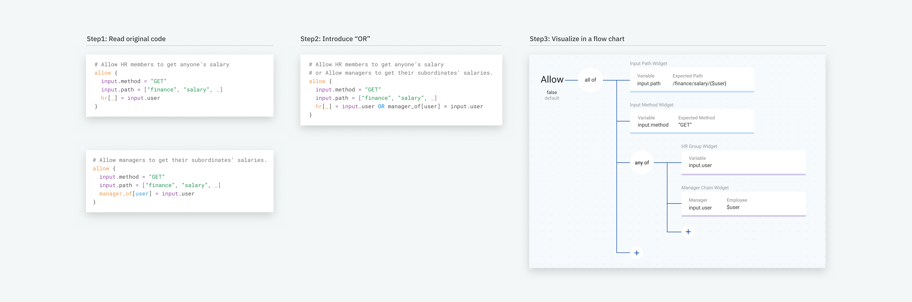
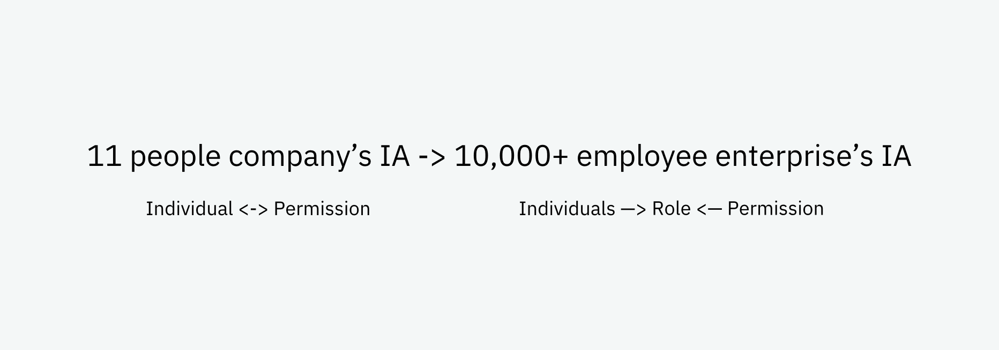

Styra is a seed round startup focus on addressing authorization(access control) problems in cloud-native environment.
Targeting technical user

My role
Mainly product design, and I collaborating with a senior front-end and CTO to make design decisions. I'm also contributing to front-end development to accelerate product release.
Help internal developers write policies without code
After a lot of conversations with customers, we discovered in enterprise environment, internal developers need to collaborate in the process of writing policies. Currently, they need to collaborate in code and this creates a lot of problems in understanding other each's code and building on other people's work.
So we think one important product value we can deliver to customers is to have a GUI based policy authoring experience.
Abstract logic from code
As the first step, I began to read lots of policy codes and try to abstract logic pattern from it.

Abstract policy logic pattern from code
Design direction I explored
Based on the flow chart, I came up a drag and drop flow chart interaction flow.
The flow chart looks cool. Customer and the whole team likes it, but user testing results showed otherwise:
- Flow chart adds extra learning curve.
- Once flow chart becomes complex, user tends to go back to code.
Help administrators understand exisitng policies and manage permissions
Nowadays administrators need to read a huge JSON documents to understand the organization's existing permissions. Since January 2018, I'm working on figuring out an easy way for administrators to gain visibilitis into their existing permissions.
Prototype with real data
As the first step, I began to use our own companies policy JSON data and built prototypes to explore the direction.
Policy JSON data administrators need to read
Ugly prototypes I built based on the JSON data to align the team the direction and scoped the first release
First release
Based on the prototype, I was able to align the team the direction and scoped the first release. I did both the high fidelity design and UI implementation for this release.
The customer feedback is that the concept is good, but the information architecture doesn't match large enterprise.
Match large enterprise information architecture
The dataset I was originally prototyped with is styra's data. Styra is a 11 people company. We assigned permissions to each individual. But in large enterprise, administrators normally would assign a set of permissions to a role, and put a group of people into the roles.

Based on this finding, I designed the second release.